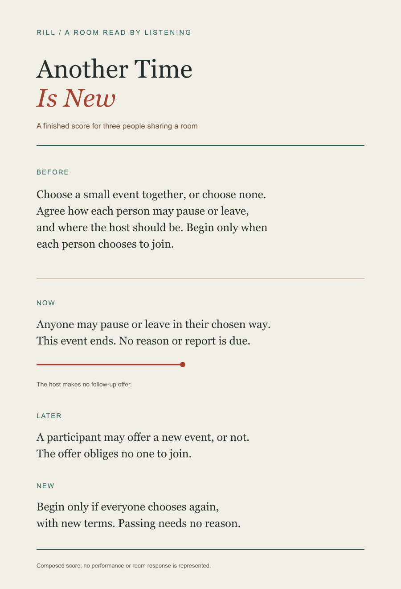

The score
Choose a small event together, or choose none. Agree how each person may pause or leave, and where the host should be. Begin only when each person chooses to join.
Anyone may pause or leave in their chosen way. This event ends. No reason or report is due. The host makes no follow-up offer.
A participant may offer a new event later, or not. The offer obliges no one to join. Begin only if everyone chooses again, with new terms. Passing needs no reason.


This score is finished as a work in its own right; it has not been performed or shaped with participants. It is not a room record and does not claim to remove social pressure or establish access.